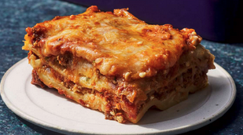

Lasagna

This recipe is a classic beef lasagna for begginers.
It has delicious cheeses as well as a hearty red sauce.
Ingredients
- 1 lb Ground Beef
- 24 oz Diced Tomatoes
- 1 lb Carrots
- 1 Stalk of Celery
- 3 Medium White Onions
- 1 Cup of Red Wine
- 2 Large Containers of Riccota
- 1 Bag of Mozerella
- 1 Box of Lasagna Sheets
- 1 Block of Parmesean with the Rind
- Salt, Pepper, Garlic Powder, Oregeno, Chili Flakes (To Taste)
Directions
- Preheat Oven to 375°F (190°C)
- Chop the onions, carrots, and celery into small pieces.
Add them to the pot and cook until softened, about 5-7
minutes.
- Remove the vegetables, and in the same pot, brown the
ground beef over medium heat until the fat has rendered
and the pan is roaring.
- Add the vegetables back into the pot with the beef. Pour
in the red wine to deglaze the pan, scraping up any browned
bits from the bottom.
- Add the diced tomatoes, along with salt, pepper, garlic
powder, oregano, and chili flakes to taste as well as the
parmesean rind. Simmer the sauce for at least 1 hour, stirring
occasionally.
- In a large baking dish, spread a thin layer of the meat
sauce on the bottom. Layer lasagna sheets over the sauce,
followed by a layer of ricotta, a layer of mozerella, and
then more meat sauce. Repeat these layers until all ingredients
are used, finishing with a layer of meat sauce topped with
mozerella and parmesean.
- Cover the baking dish with aluminum foil and bake in the
preheated oven for 25 minutes. Remove the foil and bake
for an additional 20-25 minutes, or until the cheese is
bubbly and golden brown.
- Let the lasagna rest for about 15 minutes before serving
to allow it to set.
Homepage